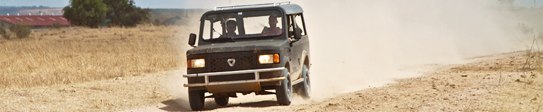

jerome arul
designer from singapore
likes triangles
*
12019 the horowitz, dell'aquila, arul show: three friends assembled some pieces at the wurks gallery, sharing the theme of balance, structure and electricity. below scientific models of the isotropic vector matrix, the gyrobifastigium, and tetrahelix


below are some select pieces from k. dell'aquila, including a live demonstration of corona


below are some select pieces from a. horowitz, demonstrating balance


12020 metal platonics ↯ will and i started teaching our metals shop class online. a series of tutorials on how to make the platonic solids ensued.
12010 fly's eye dome: buckminster fuller made only one prototype of his 24ft fly's eye dome. The dome was recovered from a barn and underwent restoration. I was fortunate enough to participate in it's reassembly. The dome was featured at Art Basel/Design Miami.


below are some illustrations from Fuller and Kuromiya's "Critical Path", depicting the dome's intended use.


12009 below left: rendering of fly's eye icosahedron. below right: a compound of platonic solids of unit edge length (in retrospect, there is a better way to scale and compare these polyhedra).

12016 using a voronoi script to generate 2.5D toolpaths.


12008 szasz solids a fractured tetrahedron produces 4 more tetrahedrons of 1/2 dimension, plus 4 equal fractions of the octahedral nucleus, revealing the edges of the cuboctahedron. The szasz solid is an irregular polyhedron with integer edges.

This solid was found during a risd course taught by Merlin Szasz. The assignment consisted of building platonic polyhedra from sheet material, then stacking them. I explored the subdivision of regular tetrahedra and poured these small concrete models.


below left: "a third frequency subdivision (ie. 2^3, or the edge of the large tetrahedron divded into 8) gives a nuclear condition of the cuboctahedron (aka the vector equilbrium, see #4). That cuboctahedron subdivides the nuclear octahedron from the first frequency subdivision." image credit: Keith Critchlow's "Order in Space" (1969). below right: excerpt from R.B. Fuller's "Synergetics".

12015 ecozoom is a social enterprise and certified B Corp that makes portable cookstoves powered by wood and charcoal. our stoves significantly reduce indoor air pollution and uses fuel efficiently. ecozoom cookstoves have been deployed by the World Food Programme, the International Committee of the Red Cross and Relief International, through programs with UNICEF and UNFCCC.


* vehicles
12013 mobius motors: an affordable and durable off-road vehicle for the east african market. the first of 50 production vehicles for mobius motors in nairobi kenya.



12012 commute: a proposal for sharing public space with autonomous vehicles. the project can be read online.


12011 electrathon is an electric vehicle design competition


12017proto roboto is a homebrewed underground experimental digital fabrication shop.


* feed